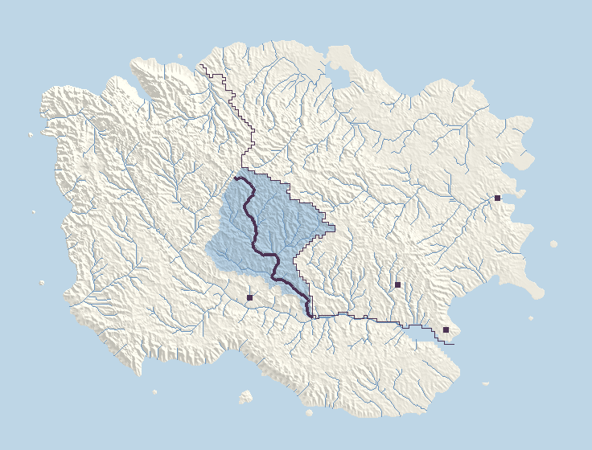

Bruna (river)
Largest tributary of the Runmek, in Urvania
 | |
| Country | Urvania |
|---|---|
| Length | 240 km |
| Basin | 11,327 km² |
| Source | about 1,034 m |
| Mouth | Runmek |
| Tributaries | Brina, Rovella, Lupa, Lontra |
| Names | Bruna (Italian) · Gekgan (Urvanian) |
The Bruna (Urvanian Gekgan, brown) is the largest tributary of the Runmek, 240 km long, with a basin of 11,327 km², and lies wholly in Urvania. It rises on the high ground at about 1,034 m and joins the Runmek at Forte Euridice, a few kilometres below the road's border crossing. Fierabruna, the market town of its valley, is named after it.[1][2]
History
In 1842 the Sardinian protectorate built Forte Euridice in the angle between the Bruna and the Runmek, just above their confluence, to watch the river. By the boundary convention of 1857 the Bruna's whole valley stayed with Urvania: north of the confluence the border follows the watershed.
Tributaries
| River | Length | Basin |
|---|---|---|
| Brina | 101 km | 2,658 km² |
| Rovella | 95 km | 2,040 km² |
| Lupa | 94 km | 1,511 km² |
| Lontra | 70 km | 1,105 km² |
On the river
From the source down to the mouth: Salicora, Fierabruna.